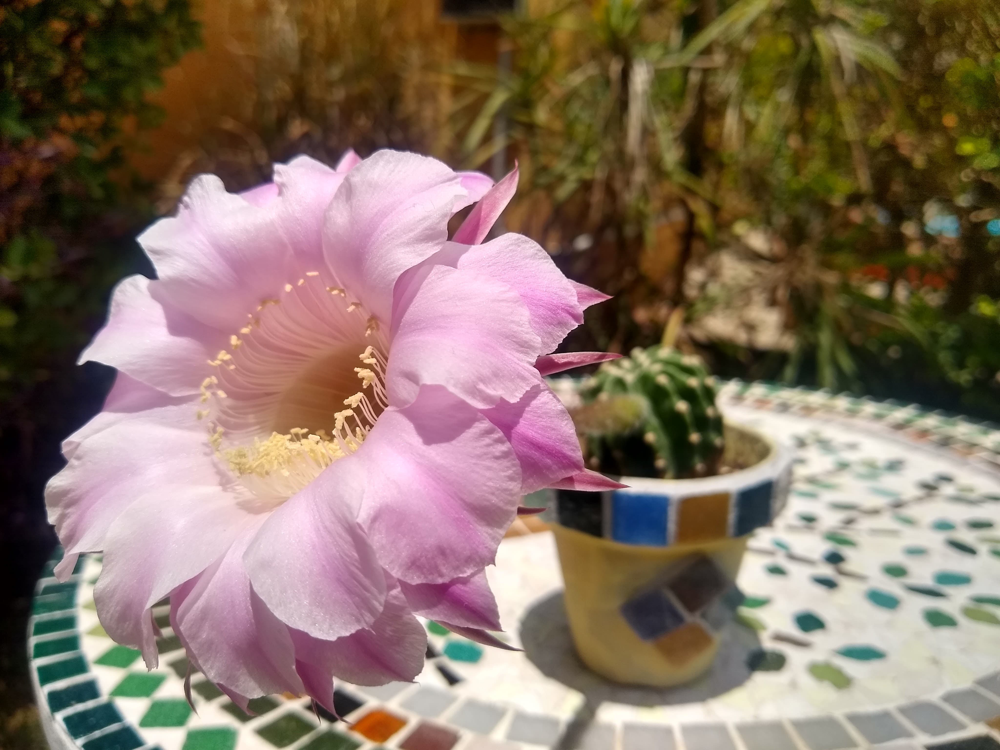
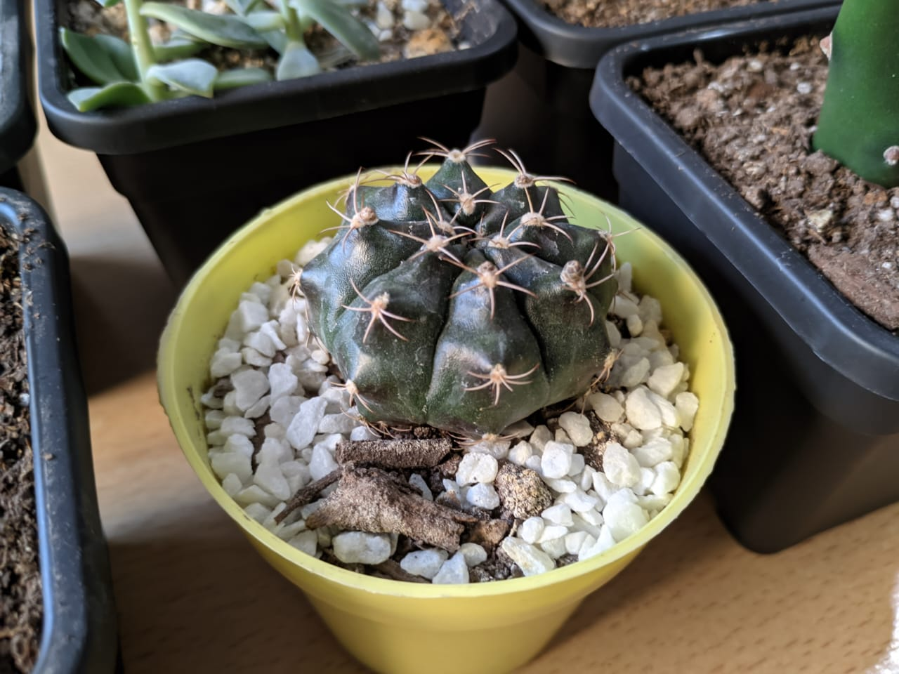
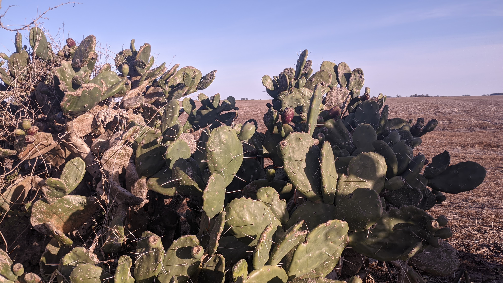
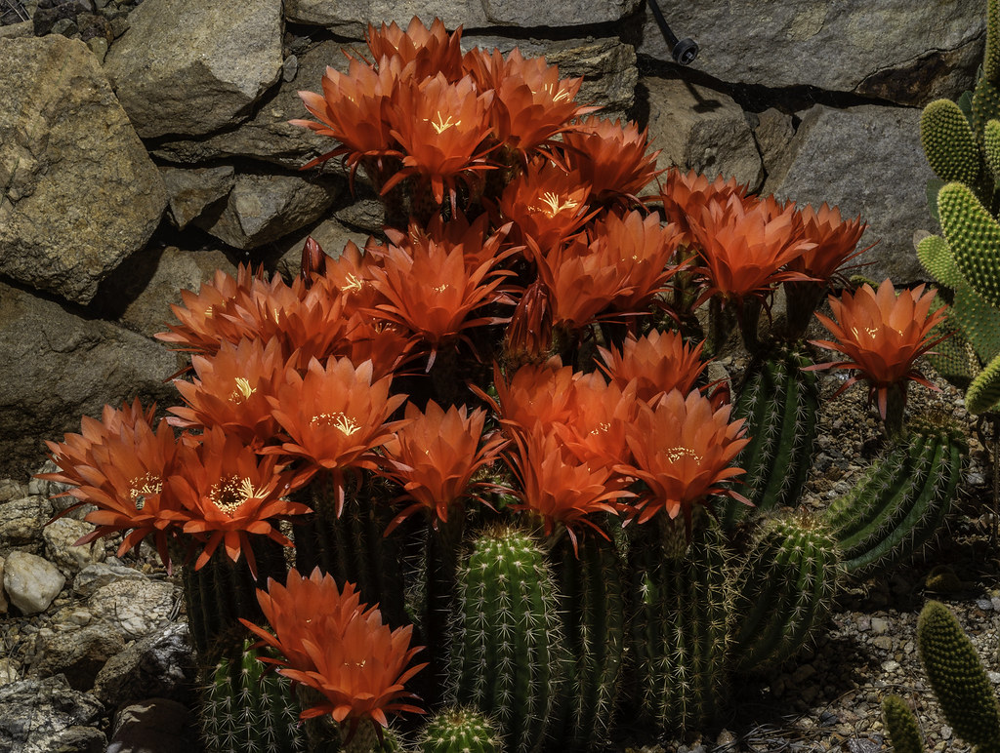

The Echinopsis genus is famous for their once-a-year, large flowers. Funnel shaped and beautiful, they sadly tend to last a day or two at most.

The Gymnocalycium Marsoneri species needs less sun to grow. It vigorously reproduces asexually when grown at home.

Opuntia, or Prickly Pear cacti, produce edible fruits. They are quite tasty, and a good source of magnesium.

Cactuses are related to beets. This is why they can produce Betalain red pigments, which most other plants don't have.